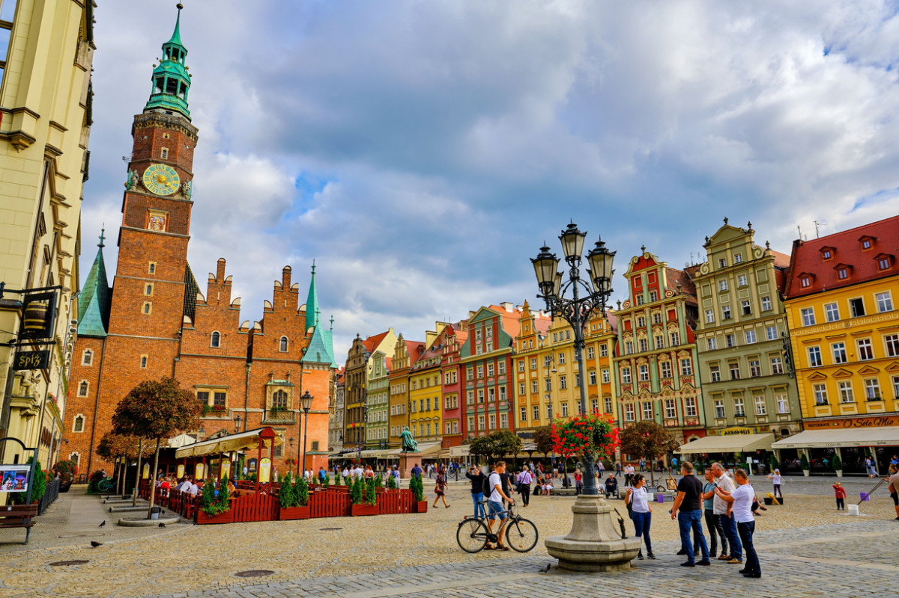
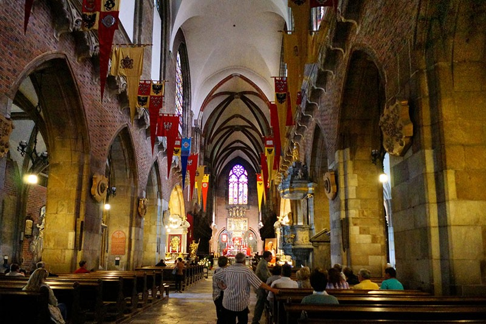
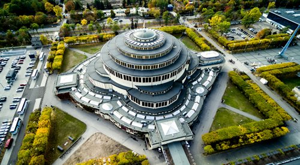
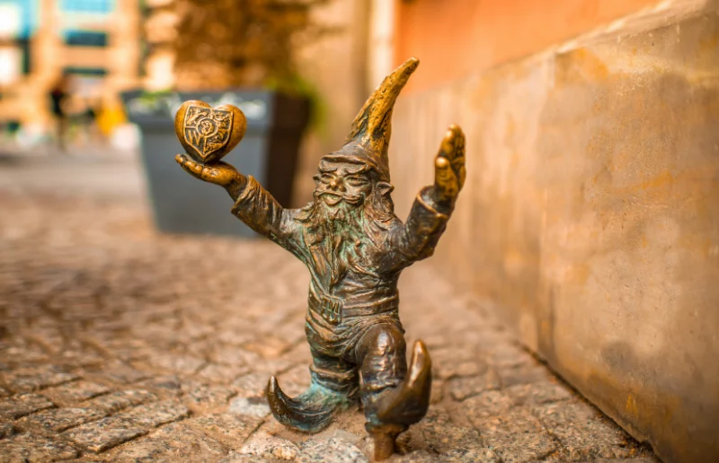

Attractions in Wrocław
Wrocław offers an array of attractions, from historical landmarks to modern cultural hubs, ensuring there is something for every visitor to enjoy.
Market Square
One of the largest medieval market squares in Europe, the Rynek is the heart of Wrocław. Lined with colorful townhouses, it features the Gothic Old Town Hall, which houses a museum and a restaurant. The square is a lively meeting spot filled with cafes, restaurants, and local events. 
Wrocław Cathedral
Located on Ostrów Tumski, the oldest part of the city, Wrocław Cathedral is a stunning example of Gothic architecture. Visitors can explore its interior or climb the tower for panoramic views of the city. 
Centennial Hall
A UNESCO World Heritage site, Centennial Hall is an architectural marvel from the early 20th century. The building hosts exhibitions, concerts, and events, and is surrounded by the peaceful Japanese Garden. 
Wrocław Dwarfs
A unique and quirky attraction, Wrocław's Dwarfs are small bronze statues scattered throughout the city. Originally a symbol of anti-communist resistance, these dwarfs have become a beloved feature of Wrocław. 